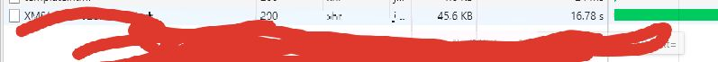

近期在做项目时遇到了一个全表全字段多条件搜索的需求，在平时搜索最常见的就是 字段+like +‘% 条件%’这种模式，但遇到多条件多字段时，这种就不适用了。 表字段已知，条件未知，条件数量未知，这种情况我们不可能每多一个条件就加一个and。
解决办法：
先将用户输入的条件存入一个数组中，例如以空格隔开的条件：
String[] strArr = SearchText.Split(" ");
进行循环遍历数组中的条件进行sql拼接
for(int i =0;i<strArr.Length;i++)
{
sql += "concat(D1,D,D3,D4,D5,D6,D7,D8,D9,D10,Data) like '%"+strArr[i] + "%'and";
}
然后将拼接好的sql放入where条件下就可以了。
这个方法是在不考虑查询效率时所使用的。
测试：数据约两万条，二十五个字段，45kb左右，大约要17s(查询条件无)
